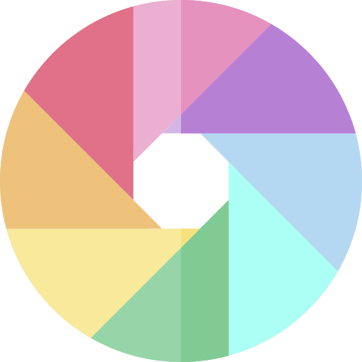
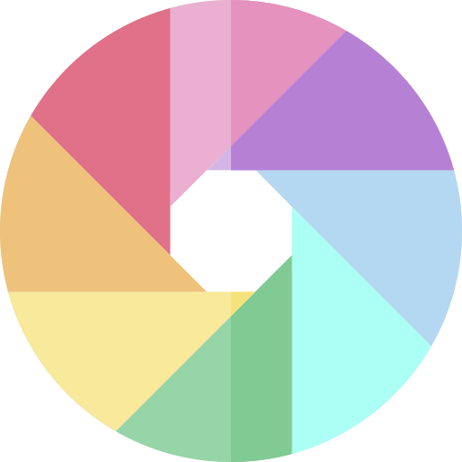

×

Your
Things
Sep 5, 2018
99
Notes
4
Done
100% done.
Wyprowadzić psa na spacer
 

Zrobić
1. Zanieść reklamówki pod 15stke
2. Zanieść słoik babci
Nauka
From the 12th century until 1868, Japan was ruled by successive feudal military shōguns who ruled in the name of the Emperor. Japan entered into a long period of isolation in the early 17th century, which was ended in 1853 when a United States fleet pressured Japan to open to the West. After nearly two decades of internal conflict and insurrection, the Imperial Court regained its political power in 1868 through the help of several clans from Chōshū and Satsuma—and the Empire of Japan was established. In the late 19th and early 20th centuries, victories in the First Sino-Japanese War, the Russo-Japanese War and World War I allowed Japan to expand its empire during a period of increasing militarism. The Second Sino-Japanese War of 1937 expanded into part of World War II in 1941, which came to an end in 1945 following the atomic bombings of Hiroshima and Nagasaki and the Japanese surrender. Since adopting its revised constitution on May 3, 1947, during the occupation by the SCAP, Japan has maintained a unitary parliamentary constitutional monarchy with an Emperor and an elected legislature called the National Diet.
Japan is a member of the ASEAN Plus mechanism, UN, the OECD, the G7, the G8 and the G20—and is considered a great power.[15][16][17] The country has the world's third-largest economy by nominal GDP and the world's fourth-largest economy by purchasing power parity. It is also the world's fourth-largest exporter and fourth-largest importer.
The country benefits from a highly skilled workforce and is among the most highly educated countries in the world, with one of the highest percentages of its citizens holding a tertiary education degree.[18] Although Japan has officially renounced its right to declare war, it maintains a modern military with the world's eighth-largest military budget,[19] used for self-defense and peacekeeping roles. Japan is a highly developed country with a very high standard of living and Human Development Index. Its population enjoys the highest life expectancy and the third lowest infant mortality rate in the world. Japan is renowned for its historical and extensive cinema, influential music industry.
Projekt
2. Zrobić 5 motywów (narazie sam CSS bez podpinania)
4. Po kliknieciu na notatke podglad jak przy dodawaniu ale z buttonem edytuj i mozliwoscia edycji notatki
5. I wtedy RWD i koniec CSS
Projekt
1. Zrobić Menu wraz z legendą
2. Zrobić 5 motywów (narazie sam CSS bez podpinania)
3. Dać ikonki na delete i oznaczanie na done oraz ikonke wielokolorowego kola onclick popup z kolkami 5 kolorow podstawowych
4. Po kliknieciu na notatke podgla jak przy dodawaniu ale z buttonem edytuj i mozliwoscia edycji notatki